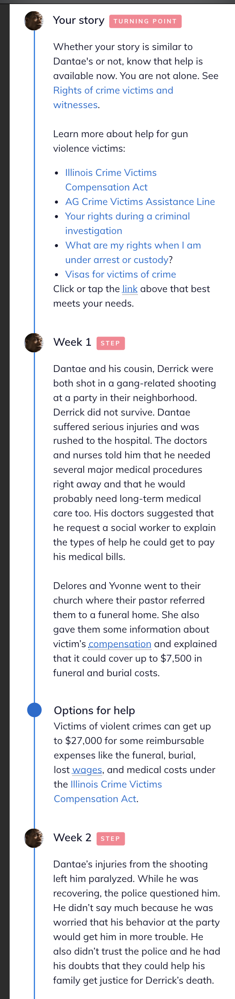
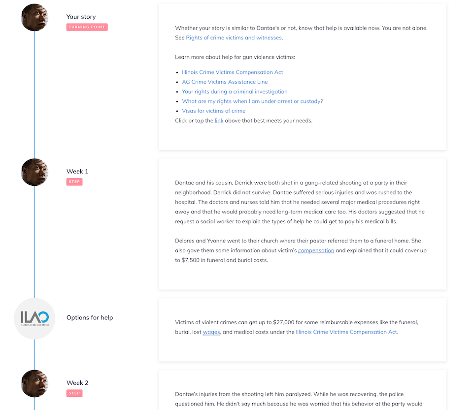

Portal layout timeline¶
The portal layout timeline is used to render a linear timeline. It does not support branching.
A timeline element includes:
A portal tab. This is rendered as a text label with a background color.
A timeline box which consists of:
A title
An image
A summary
An optional 2nd portal message which includes:
A title
An image (this is required but not rendered)
A summary
What users see¶
On mobile, the timeline elements render on a timeline with the image next to the title with the tab title next to the title and the summary beneath the image/title/tab. For elements that have a second portal message, the image is replaced with the blue circle.
{kind=link}
On desktop, the timeline elements render full-width of the page, with with the image next to the title with the tab title next to the title and the summary in a card next to the image/title/tab.. For elements that have a second portal message, the image is replaced with the ILAO logo.
Placement¶
Because timelines are full-width, they are always rendered beneath any other portal layouts. Individual timeline boxes are rendered in the order they are listed.